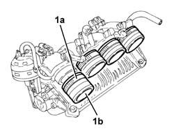

1072D14 SLEEVES JOINING LONG AIR INTAKE DUCTS TO MANIFOLD CASE - REPLACE WITH MODULAR MANIFOLD REMOVED
- Path
- Procedures > 10 ENGINE UNIT > 1072 INLET AND EXHAUST MANIFOLDS > 1072D MODULAR INLET MANIFOLD (V.I.S.) > 1072D14 SLEEVES JOINING LONG AIR INTAKE DUCTS TO MANIFOLD CASE - REPLACE WITH MODULAR MANIFOLD REMOVED
- Kind
- repair procedure (removal / refitting; the operation number is the code)
- Applies to
- engines: 1.8 T.SPARK; all production periods
- Interactive page
- https://sloeber94.github.io/elrnDB-aGt/en/#/125001087
Applies to: engines: 1.8 T.SPARK; all production periods
 Removing
Removing
 Refitting
Refitting- Loosen the bands (1a) and remove the hoses joining the long intake air ducts to the manifold body (1b).

Applies to: engines: 1.8 T.SPARK; all production periods
Refitting
Removing- Place the hoses joining the long intake air ducts to the manifold body in position and fasten them using the bands.